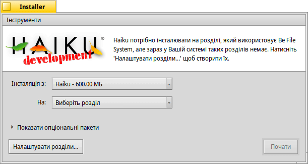

Installer (Інсталятор)
| Deskbar: | ||
| Розташування: | /boot/system/apps/Installer | |
| Налаштування: | відсутні |
Інсталятор використовується для копіювання Haiku на інший том. Він допоможе Вам зробити клон робочої системи Haiku – з усім встановленим програмним забезпеченням, усіма даними і налаштуваннями. І безперечно, він використовується для нової інсталяції системи після загрузки з компакт-диска або USB-накопичувача, докладніше дивіться в онлайн-інструкції Installation Guide.
Після запуску Installer відображає стартове вікно з важливою інформацією. Це не безглузда ліцензійна угода EULA, яку Ви звикли прокручувати не дивлячись – у повідомленні йдеться про такі речі:
Це бета-версія програмного забезпечення. Зробіть резервні копії, щоб не страждати від наслідків!
Для роботи інсталятору потрібен підготовлений розділ. Ви можете скористатися програмою настройки дисків DriveSetup для створення та форматування розділу, але поки що не можете змінити розмір наявних розділів. Для цього Вам доведеться скористатися GParted LiveCD або подібним інструментом.
Haiku можна додати вручну до менеджера загрузки GRUB. Як саме це зробити, можна дізнатися з онлайн-інструкції.
Усвідомлюючи передінсталяційні настанови, Ви натиснете кнопку і побачите головне вікно інсталятора:
Центральну частину вікна займають два списки, що розкриваються.
У першому списку Ви обираєте носій/місце з якого буде проводитись інсталяція. Це може бути вже інстальована, робоча система Haiku або ж інсталяційний компакт-диск, USB-накопичувач, тощо.
У другому списку Ви можете вказати місце, куди буде інстальована система. Цільовий розділ/том буде повністю перезаписано, тому його слід виділити заздалегідь за допомогою утиліти для створення розділів, наприклад GParted.
Натиснувши на маленький віджет розширювача біля надпису Показати опціональні пакети, Ви побачите список додаткових пакетів, якщо вони доступні, які можна встановити на додаток до основного дистрибутиву Haiku.
Перед початком процесу інсталяції слід востаннє перевірити, чи справді Ви вибрали правильне місце, куди буде інстальована система (розділ/том). Натисніть кнопку , щоб відкрити програму DriveSetup і переглянути назви та структуру доступних томів і розділів.
Кнопка запускає процедуру інсталяції, яка фактично копіює папки /home/ і /system/ на цільовий том і робить його загрузочним.
 Інструменти
Інструменти
Після завершення процедури інсталяції цільовий розділ автоматично стає загрузочним. Однак може статися так, що якась інша операційна система або програма настройки дисків (випадково) перезапише загрузочний сектор розділу/тому з системою Haiku. У цьому випадку загрузіться з інсталяційного компакт-диска і запустіть інсталятор. Виберіть загрузочний розділ Haiku у списку і виберіть пункт у меню , щоб знову зробити його загрузочним.
Пункт у меню призначено для встановлення у загрузочному секторі загрузчика BootManager, за допомогою якого можна обирати операційну систему для загрузки. Докладнішу інформацію наведено у розділі BootManager (Менеджер загрузки).
Вам не потрібно встановлювати BootManager, якщо Ви вже використовуєте загрузчик, наприклад, GRUB. У цьому випадку Вам доведеться додати Haiku вручну (дивіться вище), або Haiku буде основною системою на Вашому комп'ютері.